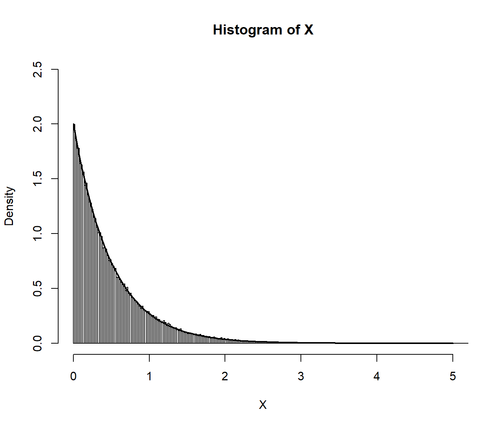
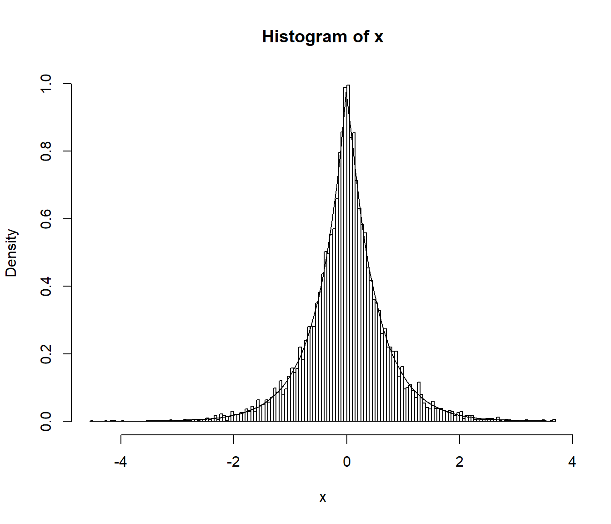

5.1 Método de inversión
Se trataría del método preferible para la simulación de una variable continua (siempre que se disponga de la función cuantil). Está basado en los siguientes resultados:
Si \(X\) es una variable aleatoria con función de distribución \(F\) continua y estrictamente monótona (invertible), entonces: \[U=F\left( X\right) \sim \mathcal{U}\left( 0,1\right),\] ya que: \[G\left( u\right) = P\left( Y\leq u\right) = P\left( F\left( X\right) \leq u\right) \\ = P\left( X\leq F^{-1}\left( u\right) \right) = F\left( F^{-1}\left( u\right) \right) = u.\]
El recíproco también es cierto, si \(U\sim \mathcal{U}\left( 0,1\right)\) entonces: \[F^{-1}\left( U\right) \sim X\]
Algoritmo (método de inversión):
Generar \(U\sim \mathcal{U}\left( 0,1\right)\).
Devolver \(X=F^{-1}\left( U\right)\).
5.1.1 Ejemplo
Algoritmo para simular el método de inversión la distribución exponencial \(\exp \left( \lambda \right)\):
\(f\left( x\right) =\lambda e^{-\lambda x}\) si \(x\geq 0\)
\(F\left( x\right) =1-e^{-\lambda x}\) si \(x\geq 0\)
\(1-e^{-\lambda x}=u \Leftrightarrow x=-\frac{\ln \left( 1-u\right) }{ \lambda }\)
Algoritmo:
Generar \(U\sim \mathcal{U}\left( 0,1\right)\).
Devolver \(X=-\dfrac{\ln \left( 1-U\right) }{\lambda }\).
NOTA: en el último paso podemos emplear directamente \(U\) en lugar de \(1-U\), ya que \(1 - U\sim \mathcal{U}\left( 0,1\right)\). Esta última expresión para acelerar los cálculos es la que denominaremos forma simplificada.
# Simular vector exp(lambda)
tini <- proc.time()
lambda <- 2
nsim <- 10^5
set.seed(1)
U <- runif(nsim)
X <- -log(U)/lambda # -log(1-U)/lambda
tiempo <- proc.time() - tini
tiempo## user system elapsed
## 0.02 0.00 0.01hist(X,breaks="FD",freq=FALSE,xlim=c(0,5),ylim=c(0,2.5))
curve(dexp(x,lambda),lwd=2,add=TRUE)
5.1.2 Algunas distribuciones que pueden simularse por el método de inversión
A continuación se incluyen algunas distribuciones que se pueden simular fácilmente mediante el método de inversión. Se adjunta una forma simplificada del método que tiene por objeto evitar cálculos innecesarios (tal y como se hizo en el ejemplo de la exponencial).
| Nombre | Densidad | \(F\left( x\right)\) | \(F^{-1}\left( U\right)\) | Forma simplificada |
|---|---|---|---|---|
| \(\exp\left( \lambda\right)\) (\(\lambda>0\)) | \(\lambda e^{-\lambda x}\), si \(x\geq0\) | \(1-e^{-\lambda x}\) | \(-\dfrac{\ln\left( 1-U\right) }\lambda\) | \(-\dfrac{\ln U}\lambda\) |
| Cauchy | \(\dfrac1{\pi\left( 1+x^{2}\right) }\) | \(\dfrac12+\dfrac{\arctan x}\pi\) | \(\tan\left( \pi\left( U-\dfrac12\right) \right)\) | \(\tan\pi U\) |
| Triangular en \(\left( 0,a\right)\) | \(\dfrac2a\left( 1-\dfrac xa\right)\), si \(0\leq x\leq a\) | \(\dfrac2a\left(x-\dfrac{x^{2}}{2a}\right)\) | \(a\left( 1-\sqrt{1-U}\right)\) | \(a\left( 1-\sqrt{U}\right)\) |
| Pareto (\(a,b>0\)) | \(\dfrac{ab^{a}}{x^{a+1}}\), si \(x\geq b\) | \(1-\left( \dfrac bx\right)^{a}\) | \(\dfrac b{\left( 1-U\right) ^{1/a}}\) | \(\dfrac b{U^{1/a}}\) |
| Weibull (\(\lambda,\alpha>0\)) | \(\alpha\lambda^{\alpha}x^{\alpha-1}e^{-\left( \lambda x\right) ^{\alpha}}\), si \(x\geq0\) | \(1-e^{-\left( \lambda x\right) ^{\alpha}}\) | \(\dfrac{\left( -\ln\left(1-U\right) \right) ^{1/\alpha}}\lambda\) | \(\dfrac{\left( -\ln U\right)^{1/\alpha}}\lambda\) |
La distribución doble exponencial (o distribución de Laplace) de parámetro \(\lambda\) tiene función de densidad: \[f\left( x\right) =\frac{\lambda}{2}e^{-\lambda\left\vert x\right\vert }\text{, }x\in\mathbb{R}\] y función de distribución: \[F\left( x\right) =\int_{-\infty}^{x}f\left( t\right) dt=\left\{ \begin{array}{ll} \frac{1}{2}e^{\lambda x} & x<0\\ 1-\frac{1}{2}e^{-\lambda x} & x\geq0 \end{array} \ \right.\]
Escribir una función que permita generar, por el método de inversión, una muestra de \(n\) observaciones de esta distribución (NOTA: esta distribución puede generarse fácilmente simulando una distribución exponencial y otorgarle un signo positivo o negativo con equiprobabilidad; ver método de composición).
ddexp <- function(x, lambda = 1){ # Densidad doble exponencial lambda*exp(-lambda*abs(x))/2 } rdexp <- function(lambda = 1){ # Simulación por inversión # Doble exponencial U <- runif(1) if (U<0.5) { return(log(2*U)/lambda) } else { return(-log(2*(1-U))/lambda) } } rdexpn <- function(n = 1000, lambda = 1) { # Simulación n valores de doble exponencial x <- numeric(n) for(i in 1:n) x[i]<-rdexp(lambda) return(x) }Generar \(10^{4}\) valores de la distribución doble exponencial de parámetro \(\lambda=2\) y obtener el tiempo de CPU que tarda en generar la secuencia.
set.seed(54321) system.time(x <- rdexpn(10^4, 2))## user system elapsed ## 0.03 0.00 0.03Representar el histograma y compararlo con la densidad teórica.
hist(x, breaks = "FD", freq = FALSE) # lines(density(x), col = 'blue') curve(ddexp(x, 2), add = TRUE)
5.1.3 Ventajas e inconvenientes
Ventajas:
- Aplicable, en principio, a cualquier distribución continua.
Inconvenientes:
Puede no ser posible encontrar una expresión explícita para \(F^{-1}\left( u\right).\)
Aún disponiendo de una expresión explícita para \(F^{-1}\left( u\right)\), su evaluación directa puede requerir mucho tiempo de computación.
Alternativas:
Emplear métodos numéricos para resolver \(F\left( x\right) -u=0\) (requeriría resolver numéricamente esta ecuación para cada valor aleatorio que se desee generar).
Utilizar una aproximación a \(F^{-1}\left( u\right)\) (inversión aproximada).
5.1.4 Inversión aproximada
En muchos casos en los que no se puede emplear la expresión exacta de la función cuantil \(F^{-1}\left( u\right)\), se dispone de una aproximación suficientemente buena que se puede emplear en el algoritmo anterior (se obtendrían simulaciones con una distribución aproximada a la deseada).
Por ejemplo, para aproximar la función cuantil de la normal estándar, Odeh y Evans consideraron la siguiente función auxiliar : \[ g\left( v\right) =\sqrt{-2\ln v}\frac{A\left( \sqrt{-2\ln v}\right) }{B\left( \sqrt{-2\ln v}\right) },\] siendo \(A\left( x\right) =\sum_{i=0}^{4}a_{i}x^{i}\) y \(B\left( x\right) =\sum_{i=0}^{4}b_{i}x^{i}\) con:
\[\begin{array}{ll} a_{0}=-0.322232431088 & b_{0}=0.0993484626060 \\ a_{1}=-1 & b_{1}=0.588581570495 \\ a_{2}=-0.342242088547 & b_{2}=0.531103462366 \\ a_{3}=-0.0204231210245 & b_{3}=0.103537752850 \\ a_{4}=-0.0000453642210148 & b_{4}=0.0038560700634 \end{array}\]
La aproximación consiste en utilizar \(g\left( 1-u\right)\) en lugar de \(F^{-1}\left( u\right)\) para los valores de \(u\in[10^{-20},\frac12]\) y \(-g\left( u\right)\) si \(u\in[\frac12,1-10^{-20}]\). Para \(u\notin [10^{-20},1-10^{-20}]\) (que sólo ocurre con una probabilidad de \(2\cdot10^{-20}\)) la aproximación no es recomendable.
Algoritmo de Odeh y Evans
Generar \(U\sim U\left( 0,1\right)\).
Si \(U<10^{-20}\) ó \(U>1-10^{-20}\) entonces volver a 1.
Si \(U<0.5\) entonces hacer \(X=g\left(1-U\right)\) en caso contrario hacer \(X=-g\left( U\right)\).
Devolver \(X\).
En manuales de funciones matemáticas, como Abramowitz y Stegun (1964), se tienen aproximaciones de la función cuantil de las principales distribuciones (por ejemplo en la página 993 las correspondientes a la normal estándar).